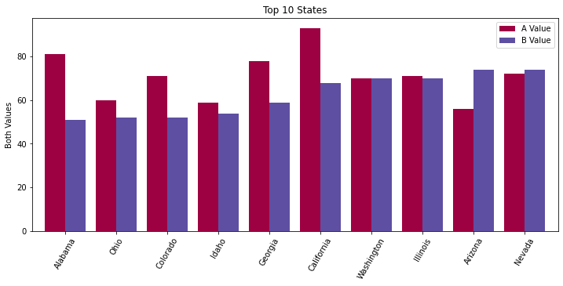
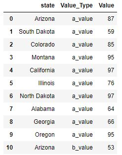
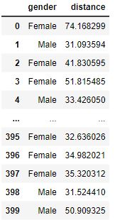
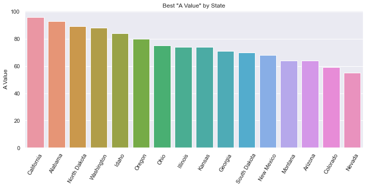
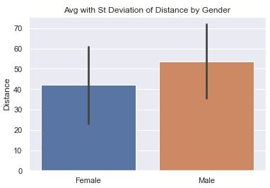

Bar Charts#
Bar charts are good when:
The x-axis is categorical and does not have a natural order (e.g. Country names).
There are very few points to show (e.g. 4 or less)
There isn’t an obvious relationship to the prior value on the x-axis (because they are categorical).
You want to use color to emphasize the height or illustrate a relationship to another value.
You have a count you want to represent
Bar charts are NOT good when:
You’re attempting to show a correlation. (e.g. more X means more Y)
The data are indended to be continuous and not discrete
There are a lot of points to show (e.g. 20 or more)
There are a lot of different libraries and methods to create bar charts. Here is a quick summary. Details are found in the examples below.
API |
When to use |
|---|---|
|
There is only one value per category |
|
There is one value per category and horizontal bars adds meaning or there are many categories to show |
|
Essentially the same as |
|
You want to count occurences |
|
There are many values per category to be averaged. The data can be structured differently. |
|
Effectively the same as |
Positive vs Negative Bars#
In this example bar chart you’ll see that the positive values have green bars while the negative values have red bars. The example below only uses two colors to emphasize the direction of change. We use a bar chart here depsite there being many different years to plot because the green/red colors emphasize the relative changes nicely.

def pos_neg_bar_chart(df):
# first create a figure with one axis
fig, ax = plt.subplots(1)
# create a color column
df['color'] = df['Annual Change'].apply(lambda v: 'green' if v >= 0 else 'red')
# create the bar chart with slightly wider bars
df.plot(kind='bar', x='date', y='Annual Change', width=0.8, color=df['color'], ax=ax, label='Positive Change')
plt.xticks(np.arange(0, 61, 10))
plt.xlabel('Year')
plt.ylabel('Change in %')
plt.title('Annual Change in Inflation from 1961-2021')
# slant the dates to be at an angle
fig.autofmt_xdate()
Here are the first few lines of data in the DataFrame.

The x-axis label has only a few years listed because of the method
plt.xticks(np.arange(0, 61, 10)). This reduces the number of ticks in the graph and makes it much more readable.The years on the x-axis look nice due to the
xtickscall as well asfig.autofmt_xdate(). One could instead useplot.xticks(rotation=45)to provide a custom rotation of the x-label.The Title and y-axis labels use the phrase
Change inmeaning that the value is relative to the prior year. The chart does not plot the actual inflation rate of that year (which is almost always positive).
Overlayed Bars#
This is a bar chart that has the values overlayed one on top of the other. The values are NOT stacked. This means that the base of the tall bar is at the bottom: the top of the bar has a height as denoted on the y-axis. This example shows how to overlay bar charts as well as to annotate the bars with a values.

def annotated_bars(df):
# generate a 'payback' column
df['payback'] = df['return'] / df['investment']
# get the custom-sized figure and axis for annotation work.
fig, ax = plt.subplots(1, figsize=(15,5))
# Graphs two bar charts on the same axis, one overlayed on top of the other.
# One value must be known to be greater than the other if it is to be seen.
# Plot the larger value first so that it doesn't completely hide the smaller value.
plt.bar(x=df['year'], height=df['return'], color='#10E0D0', label='Return')
# add annotations before plotting the second set of values
add_value_labels(ax, df['payback'], fmt='x{:.2f}')
# plot the shorter bars second, on top of the taller bars
plt.bar(x=df['year'], height=df['investment'], color='#A030A0', label='Investment')
# Adds formatting specifications like a legend and title
plt.xlabel('Year')
plt.ylabel('Dollars')
plt.xticks([int(y) for y in df['year']], rotation=-45)
plt.legend()
plt.title('Investments & Returns')
Code source: StackOverflow
def add_value_labels(ax, values, fmt="{:.1f}", spacing=2):
"""
Add labels to the end of each bar in a bar chart.
Arguments:
ax (matplotlib.axes.Axes): The matplotlib object containing the axes
of the plot to annotate.
values: the sequence of values to show
fmt: a customizable format string used to print the values
spacing (int): The distance in pixels between the labels and the bars
"""
# For each bar: Place a label
for index, rect in enumerate(ax.patches):
# Get X and Y placement of label from rect.
y_value = rect.get_height()
x_value = rect.get_x() + rect.get_width() / 2
# Number of points between bar and label. Change to your liking.
space = spacing
# Vertical alignment for positive values
va = 'bottom'
# If value of bar is negative: Place label below bar
if y_value < 0:
# Invert space to place label below
space *= -1
# Vertically align label at top
va = 'top'
# Format the value into a label
label = fmt.format(values[index])
# Create annotation
ax.annotate(
label, # Use `label` as label
(x_value, y_value), # Place label at end of the bar
xytext=(0, space), # Vertically shift label by `space`
textcoords="offset points", # Interpret `xytext` as offset in points
ha='center', # Horizontally center label
va=va) # Vertically align label differently for
# positive and negative values.
Here is the complete set of data in the DataFrame. Notice how the annotated values are not present in this
initial dataframe. Instead, the plotting code calculates the “payback factor” and adds this column before
plotting.

We broke out the annotation code separately because there is a lot going on there.
The overlayed bars is accomplished by plotting two bar charts, one with shorter bars on top of another with taller bars. The second plot covers up the first. If the second plot has values greater than the first, then the first plot’s bars will be hidden.
The annotation code gets a bunch of rectangles (via
ax.patches) that reveals the location of each bar in the plot. In creating this figure we have plotted multiple bar charts, so we need to annotate immediately after the first chart is plotted, otherwise we’d get many more rectangles due to the second plot.We use custom colors for the bars using the
#RRGGBBsyntax.The figure would be too narrow for our tastes, so we increase the figure size when calling
subplots.
Sorted Bars#
Bar charts usually have an x-axis that doesn’t have a natural sorting order. However, sorting by the height of the bars is a valuable way to present data and insight.

def sorted_plt_bars(df):
# we need the axis and a larger figure size to make this plot look nice
fig, ax = plt.subplots(1, figsize=(12, 5))
# remove any background grid that might be present (generally only needed if seaborn was used previously)
ax.grid(False)
# sort the dataframe. Here we assign back to df. Altneratively, we could have done `inplace=True`.
df = df.sort_values(by='a_value', ascending=False)
# no color parameter provided means that we default to a single blue color.
bar = plt.bar(x=df['state'], height=df['a_value'])
# this adds the value of the bar to the center of the bar
ax.bar_label(bar, label_type='center')
# make the x-axis values be slanted to ease the readability
plt.xticks(rotation=60)
# every plot needs good labels
plt.title('Best "A Value" by State')
plt.ylabel('A Value')
plt.xlabel('')
This is the first 11 rows of the orginal data (which was unsorted).

When there are a good number of bars, the viewer will benefit if the bars are sorted.
In this chart, text is added inside the bar to provide the bar’s value. Without a grid background (which can be added when using seaborn), it can be hard to know what the precise value is. There are multiple ways to add text. In this example, we use the
ax.bar_labelAPI. But, one can also useplt.textorax.annotatemethods.The x-axis label is purposely set to an empty string because the viewer can clearly the x-axis values and understand their meaning.
The colors of the bars can be cusomized using the
colornamed parameter. You can set all the bars to one identical color, or pass in a sequence of values such asdf['color'](if you create a meaningful and correct color column in the dataframe).
Adjusted Y-Label#
Bar charts usually have the y-axis start at 0. You may want to adjust the y-label to accentuate the differences, or simply to provide different insight. There are 3 different plots here. First, we use bottom on the plt.bar API to adjust the y-axis. To get the bars to draw at the correct height, we must plot an adjusted column. In this plot we also explore how to arbitrarily label the y-axis. Second, we use the plt.ylim API and adjust the list of Rectangles used to place the labels in the center of the bars. We also choose to plot on the Series object, simply to demonstrate that it can be done. Third, we label on the 'edge' which simplifies the code a bit. We also play around with different colors. Read the comments in the code to get more insight.


def sorted_plt_bars(df):
fig, ax = plt.subplots(1, figsize=(12, 5))
# Show the y-axis grid lines, but show them underneath the bars
ax.grid(axis='y')
ax.set_axisbelow(True)
# sorting the values provides a more informative plot
df = df.sort_values(by='a_value', ascending=False)
# adjust the values so that we can change the bottom of the plot
bottom = 40
df['adj_value'] = df['a_value'] - bottom
# plt.bar returns a "BarContainer" that has all the rectangles of the bars.
# Set bottom to zoom in.
bar = plt.bar(x=df['state'], height=df['adj_value'], bottom=bottom)
# With the bar height adjusted, the bar label values are correct.
# Fix the bar label values by providing the labels argument.
ax.bar_label(bar, labels=df['a_value'], label_type='center')
plt.xticks(rotation=60)
plt.title('Best "A Value" by State')
plt.ylabel('A Value')
plt.xlabel('')
# Let's customize the y-labels using yticks.
# The first argument is a list of the positions using the values found in the data.
# The second argument is a list of the lables to use.
plt.yticks([y for y in range(40, 100, 10)], ['one', 'two', 'three', 'four', 'five', 'six'])
def sorted_plt_bars(df):
fig, ax = plt.subplots(1, figsize=(12, 5))
# sort the states for a better display
df = df.sort_values(by='a_value', ascending=False)
# In this example, let's show how a Series object can be used to plot the bars.
# Set the index so that our Series will have the correct x-axis.
df = df.set_index('state')
# the default width is a bit skinny. Increase the width.
ax = df['a_value'].plot(kind='bar', width=0.7, color='lightcoral')
# get our bar containers from axes to allow us to draw the values correctly
bars = ax.containers[0]
# adjust the Rectangles so the label prints in the middle
bottom = 40
bars.patches = [plt.Rectangle(r.get_xy(), r.get_width(), r.get_height()+bottom) for r in bars.patches]
# Show grid lines on both axis, blue, with small dotted linestyle.
# And, show the grid lines underneath the bars.
ax.grid(True, which='major', axis='both', color='b', ls=':')
ax.set_axisbelow(True)
# use plt.ylim to set the min/max y-values in the plot
plt.ylim(bottom=bottom, top=100)
# label the bars with the original values from the DataFrame
ax.bar_label(bars, labels=df['a_value'], label_type='center')
plt.xticks(rotation=60)
plt.title('Best "A Value" by State')
plt.ylabel('A Value')
plt.xlabel('')
def sorted_plt_bars(df):
fig, ax = plt.subplots(1, figsize=(12, 5))
# sort the states for a better display
df = df.sort_values(by='a_value', ascending=False)
# in this example, let's show how a Series object can be used to plot the bars.
# Set the index so that our Series will have the correct x-axis
df = df.set_index('state')
ax = df['a_value'].plot(kind='bar', color='seagreen')
# get our bar containers from axes to allow us to draw the values correctly
bars = ax.containers[0]
# Show grid lines
ax.grid(True, which='major', axis='both', color='y', ls='-.')
ax.set_axisbelow(True)
# use plt.ylim to set the min/max y-values in the plot
plt.ylim(bottom=40, top=110)
# use label_type='edge' to show the label on the top of the bars
ax.bar_label(bars, labels=df['a_value'], label_type='edge')
plt.xticks(rotation=60)
plt.title('Best "A Value" by State')
plt.ylabel('A Value')
plt.xlabel('')
Stacked Bars#
Sometimes the addition of multiple values has meaning and you’ll want to stack one bar on top of another. This allows you to see multiples values and their sum total. We still sort the bars by a specific value to provide some added insight.

def stacked_df_plot_kind(df):
# create a figure of a good size
fig, ax = plt.subplots(1, figsize=(12, 5))
# sort by one of the values in the dataframe
df = df.sort_values(by='a_value', ascending=False)
# x-axis of a bar chart is taken from the index, so set the index to the state
df = df.set_index('state')
# tell matplotl;ib to plot a bar chart where the bars are stacked
df.plot(kind='bar', stacked=True, ax=ax)
# set labels to make it all readable
plt.xticks(rotation=60)
plt.title('Stacked Bar')
plt.xlabel('')
plt.ylabel('Both Values')
This is the first 11 rows of the orginal data (which was unsorted).
We could have chosen to sort by the sum total of the values charted. It all depends on what you’re trying to illustrate.
If the DataFrame has more columns, each column’s value will be stacked into this bar chart. Here, we have only two columns that are not the index value.
Side-by-side Bars#
Sometimes you want to compare two values side-by-side across a set of categories. We demonstrate TWO ways to do this.
pltoffers a way usingstacked=Falsewhere there are many columns with values to plot.seabornallows us to plot usinghue='column'when the data is structured differently.
Be sure to look at the data structure in each of these two examples.
Note that this image is very, very similar to the Seaborn plot generated with the code used below. The differences are: The legend does not have a title, the color shades are slightly different, the legend is fully opaque, there are vertical grid lines. All of these are very subtle.

def plot_side_by_side(df):
fig, ax = plt.subplots(1, figsize=(12, 5))
# get the first 10 rows.
# After sorting, we need to reset the index to allow .loc[:9] to work.
df = df.sort_values(by='b_value', ascending=True).reset_index(drop=True)
# recall that in Pandas, slices are inclusive on both ends
df = df.loc[:9]
# x-axis is taken from the index, so set that to the state
df = df.set_index('state')
# If we wanted to customize the colors, use: colormap='Spectral' (or something similar).
# The named argument 'color' won't work nicely here. color='red' would set all bars red.
# https://matplotlib.org/2.0.2/examples/color/colormaps_reference.html
df.plot(kind='bar', stacked=False, width=0.8, ax=ax)
plt.xticks(rotation=60)
plt.title('Top 10 States')
plt.ylabel('Both Values')
plt.xlabel('')
plt.legend(['A Value', 'B Value'])
This is the first 11 rows of the orginal data (which was unsorted).
More horizonal space is needed for side-by-side bar charts. You shouldn’t show too many bars in one plot; we filter this chart down to just 10 states.
The width of each bar can give the chart a different feel. Here we increase the width a bit.
The color of the bars can be set manually via the named parameter
color. But, this isn’t what we want when we have side-by-side bars. Instead, we would want to usecolormapwhich has a lot of different options, including gradients. Ultimately, we used the default colors.I found it interesting that my first attempt to limit the data to 10 rows worked without having used
reset_index. I’m not sure how it worked originally, but I’m pretty sure that always using reset_index() will work. Also, there is aninplacenamed argument that we explicitly needed to have set toFalse(or not set to True). This assures that the reset_index() returns a new dataframe.
We can also use Seaborn to do this plot, but the data needs to be organized differently. We do a little extra
work to get the data to look right, but sometimes our data starts off looking this way. Furthermore, it
is really good to know about the method pd.melt. The resulting bar plot is virtually identical.
Note that this image is very, very similar to the plot generated with plt above.

This is the data after we melt the DataFrame to its new structure. The original data structure is shown in the plt example above.

def sns_side_by_side(df):
fig, ax = plt.subplots(1, figsize=(12, 5))
# get the first 10 rows of data sorted by b_value.
# After sorting, we need to reset the index to allow .loc[:9] to work.
df = df.sort_values(by='b_value', ascending=True).reset_index(drop=True)
# recall that in Pandas, slices are inclusive on both ends
df10 = df.loc[:9]
# transform the dataframe using melt so that we go from having separate columns
# for A & B values, to having a column that designates the Value_Type
df10 = pd.melt(df10, id_vars='state', var_name='Value_Type', value_vars=['a_value', 'b_value'], value_name='Value')
# Note that we use the named argument, hue, to have multiple side-by-side bars
sns.barplot(data=df10, x='state', y='Value', hue='Value_Type')
# Get the legend handles and labels from our axis to assure that we can
# customize our legend with correct colors, title and labels.
handles, labels = ax.get_legend_handles_labels()
plt.xticks(rotation=60)
plt.title('Top 10 States')
plt.ylabel('Both Values')
plt.xlabel('')
plt.legend(handles=handles, title='Values', labels=['A Value', 'B Value'])
Often times, data will be organized as shown in the Data tab here. It then becomes easy to use
Seabornto plot, leveraging the named argument,hue.The
meltAPI is interesting. One could do all of this work by hand, but using the melt function is much easier to do.I found it interesting that my first attempt to limit the data to 10 rows worked without having used
reset_index. I’m not sure how it worked originally, but I’m pretty sure that always using reset_index() will work. Also, there is aninplacenamed argument that we explicitly needed to have set toFalse(or not set to True). This assures that the reset_index() returns a new dataframe.In this example,
plt.legend(['A Value', 'B Value'])did not show the correct colors of the bars. To fix this, I needed to get the plot’shandlesfrom theaxisobject. Furthermore, I gave the legend a title.
Horizontal Bar Chart#
If we want to plot our bars horizontally, we can leverage the barh method.

def df_horiz_plot(df):
fig, ax = plt.subplots(1, figsize=(8, 10))
df = df.sort_values(by='state', ascending=False)
# x-axis is taken from the index, so set that to the state
df = df.set_index('state')
# plot using the barh API
df.plot.barh(stacked=False, width=0.6, ax=ax)
plt.xticks(rotation=60)
plt.title('State Values')
plt.xlabel('Values')
plt.ylabel('State')
plt.legend(['A Value', 'B Value'])
This is the first 11 rows of the orginal data (which was unsorted).
DataFrame has a plot object. On this plot object we can call the following methods:
area
bar
barh
box
… and a bunch more …
Histogram#
Sometimes you want to know the number of times something occurs. A Histogram will allow you to do a bar plot that represents counts.

def hist_chart(df):
plt.hist(df['distance'], bins=25)
plt.xlabel('Distance')
plt.ylabel('Count')
plt.title('Count of Throwers at Each Distance')
This data is fake data generated for this coding example.

binsis a numberical value that sets how many bars there will be. The idea is that you ‘toss the items into bins’ and then plot the count of items in each bin.In this plot, we’ve initialized
seabornso there is a white grid in the background established withsns.set_style('whitegrid').
Seaborn Colorful Bar Chart#
Seaborn has a wide variety of fancy charts and offers easy ways to view insightful statistics. When it comes to bar charts it doesn’t add that much. Here we show two things:
Fancy colors and a different background
Statistical analysis when there are many values per category on the x-axis

def sorted_bars(df):
fig, ax = plt.subplots(1, figsize=(12, 5))
# sets the background grid style
sns.set_style("darkgrid")
df = df.sort_values(by='a_value', ascending=False)
# default to various colors. use color='navy' to set all bars to the same color.
bar = sns.barplot(data=df, x='state', y='a_value', ax=ax)
plt.xticks(rotation=60)
plt.title('Best "A Value" by State')
plt.ylabel('A Value')
plt.xlabel('')
This is the first 11 rows of the orginal data (which was unsorted).
The background is a dark grid, as set by
sns.set_style.The color of each bar is set using a
colormapwhich has a lot of different options, including gradients. We can set colormap=’xxx’ to a variety of values as described in colormaps reference.Note that there is only one data value for every State.
Seaborn Statistical Bar Chart#
There can be many values that fall in a specific category. In this example, we analyze how far people can throw a ball. We have 400 samples of people’s distance and gender and we show a simple bar chart showing the difference.

def sns_bar_stats(df):
# display the line with the standard deviation instead of %95 confidence.
# St. Dev is much better because we are not so focused on our confidence
# in the average so much as the variance in the distance.
sns.barplot(data=df, x='gender', y='distance', ci='sd')
plt.ylabel('Distance')
plt.xlabel('')
plt.title('Avg with St Deviation of Distance by Gender')
This data is fake data generated for this coding example.
The ‘line’ coming out of the bar represents some statistical information. In this chart, we have it represent the Standard Deviation to help is understand the variance in the data.
Note: in more current versions of Seaborn, ‘ci’ is deprecated in favor of ‘errorbar’. There are three options for
ci:None: don’t draw an errorbar at all
95: (Some number 0-100). This is the percent confidence you want to have in the average. Small numbers result in short lines (or no lines). Large numbers result in larger lines. In other words, if you want a lot of confidence, you need a bigger range.
‘sd’: Shows the Standard Deviation instead of the mean.
By default, the line would represent the confidence interval of the average in the data. This may sound strange because we can calculate the average of the data exactly. But, in the world of statistics, we acknowledge that our data is just a sample of the entire population and may not accurately reflect reality. The larger our sample, the more confidence we can have in the data. Seaborn uses something called bootstrapping.